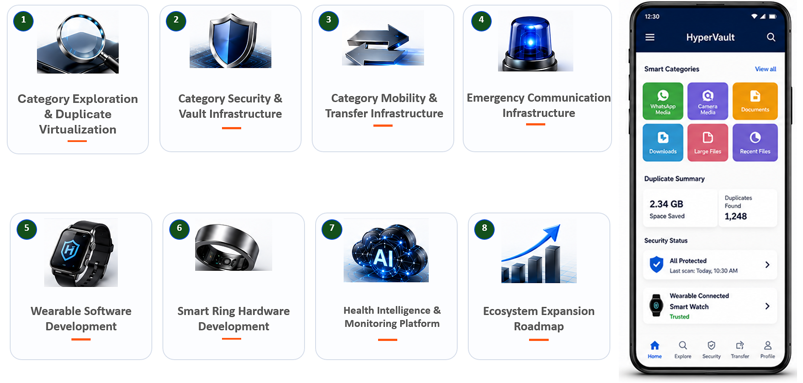

Roadmap & Timeline
Quarter-by-quarter progress from emergency prototypes to smart-ring infrastructure
HyperVault's timeline shows how emergency-response research expanded into BLE experimentation, wearable communication, smart-ring research and dedicated hardware investments.
Foundation and company setup
Q1 · January
Emergency-response prototypes
Started researching and building emergency-response prototypes.
Q2 · May
Company registration
Registered Askiplex Technologies as an OPC.
Q4 · December
Startup India recognition
Obtained Startup India recognition.
Wearable communication and BLE research
Q1
BLE experimentation
- Bluetooth Low Energy experimentation
- Initial wearable communication research
Q2
Nordic development
- Nordic nRF5340 development
- Embedded development workflow setup
Q3
GATT and Android bridge
- GATT profile development
- Android-to-wearable communication
Q4
Smart-ring architecture
- Smart-ring architecture research
- Trust and emergency workflow mapping
Smart-ring research and hardware investments
Q1 · January onward
Commercial smart-ring research
- Purchased commercial smart rings for study
- Touch interactions and gesture interactions
- Button alternatives and display possibilities
Q2
User experience and constraints
- User experience evaluation
- Form-factor limitations
- Battery tradeoffs
- Emergency activation workflows
Q3
Development and testing systems
- Dell Laptop, RAM upgrades and SSD upgrades
- Mac Mini
- iPhone and multiple Android devices
- Nordic nRF5340 Development Kit
Q4
Sensor evaluation hardware
- BMA400 Triple Axis Accelerometer
- TMP117 Temperature Sensor
- MAX30102 Pulse Oximeter
- Heart rate sensors and SpO2 sensors
